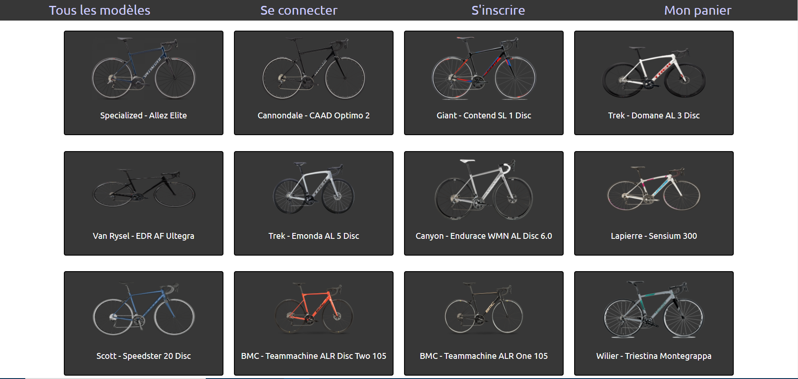
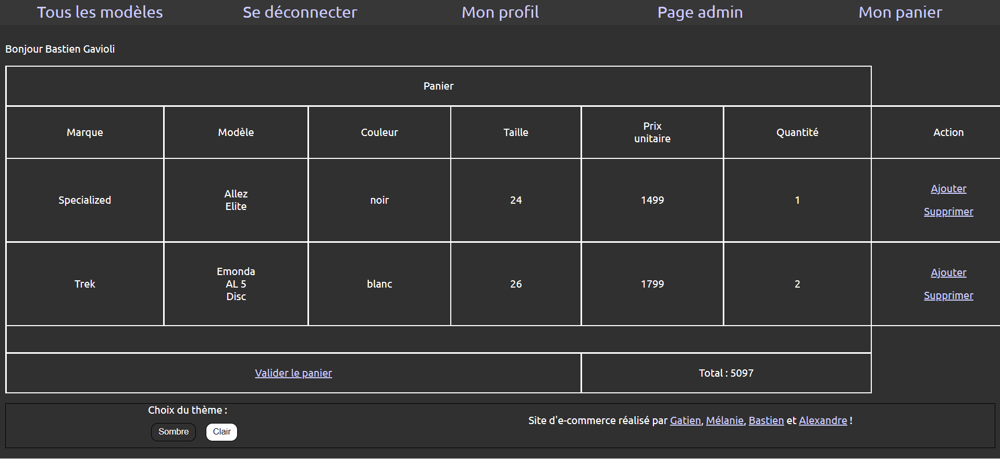
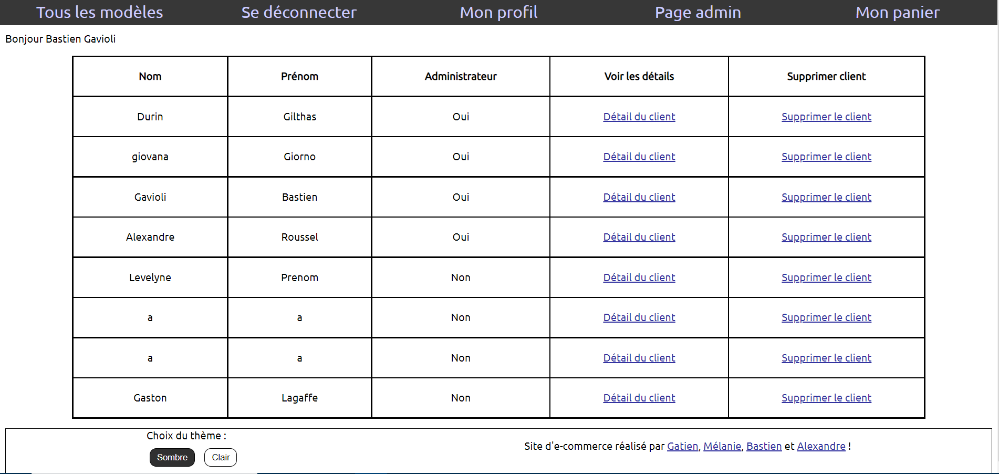
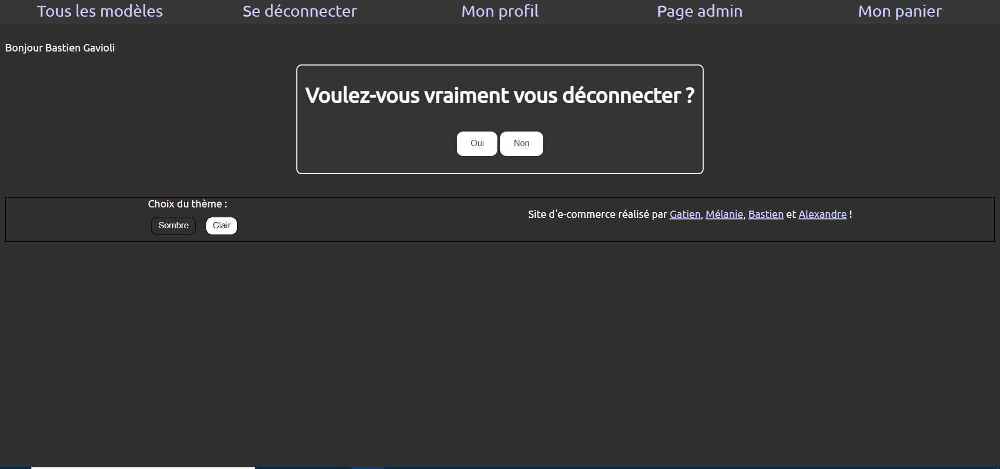

Site Web dynamique (HTML/CSS/PHP/MySQL)
Ce site Web a été réalisé en HTML/CSS et rendu dynamique grâce au langage PHP et une base de données MySQL pour un site de e-commerce. Il a été réalisé dans le cadre de mon apprentissage du développement Web serveur, donc l'attention sur ce site était surtout du côté des compétences en langage PHP, de notre base de données MySQL et de notre implémentation du modèle MVC. Nous étions quatre sur ce projet.
Nous avons essayé de rendre le site Web responsive, mais toutes les pages ne le sont pas pour des raisons de manque de temps.
Quelques images du site

Page d’accueil du site

Aperçu du panier

Aperçu de la Page Admin quand on est connecté

Aperçu de la page de déconnexion